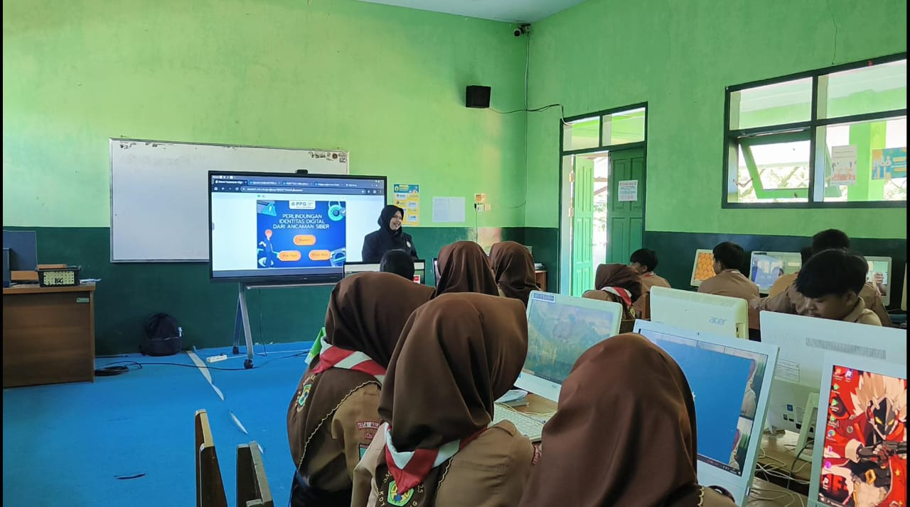
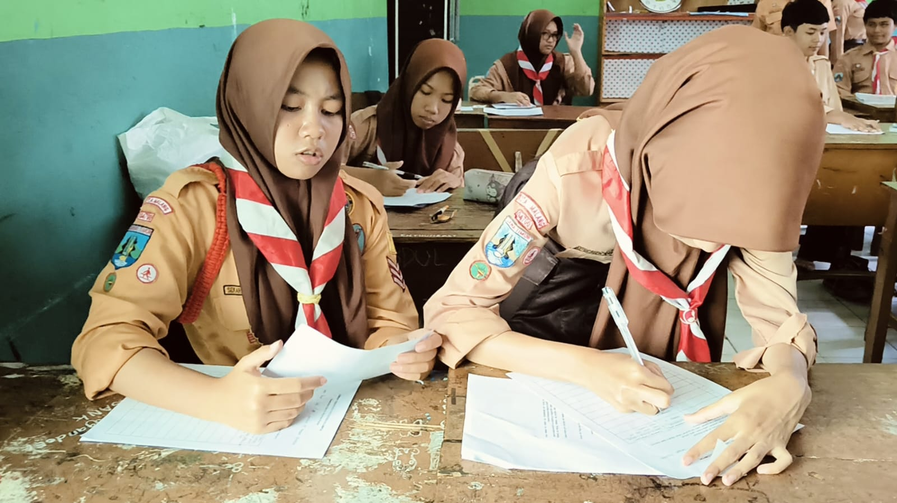
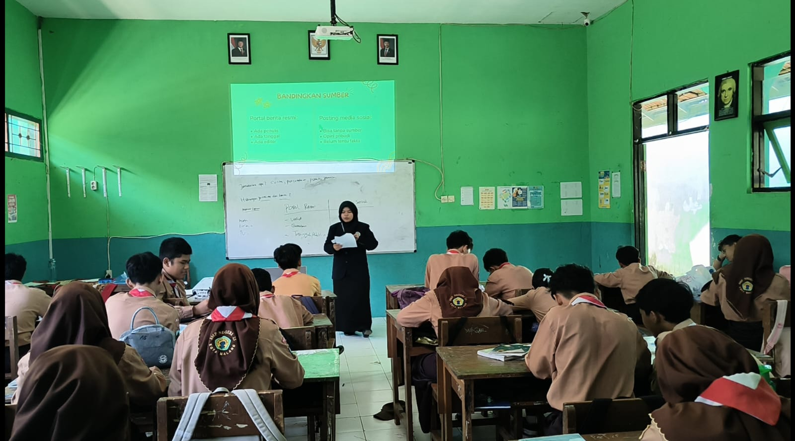
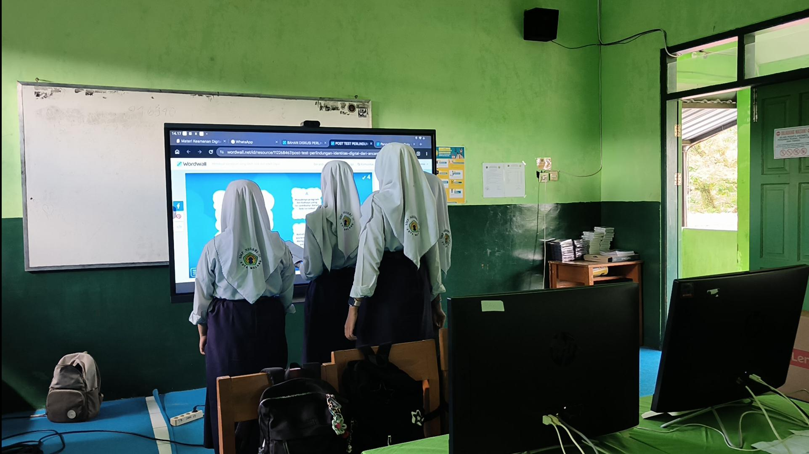
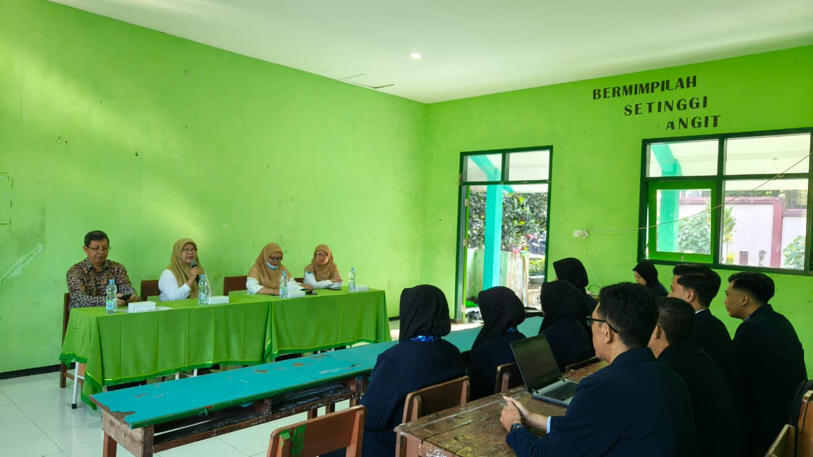
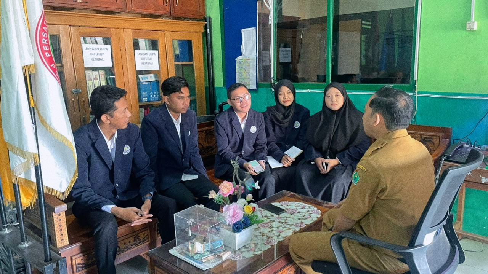
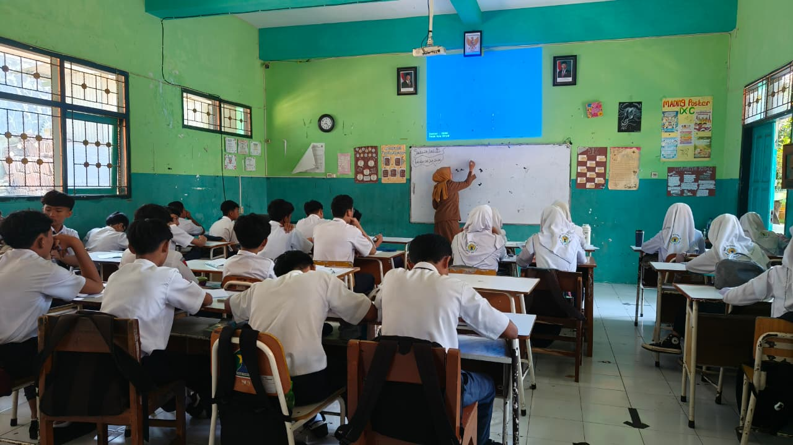
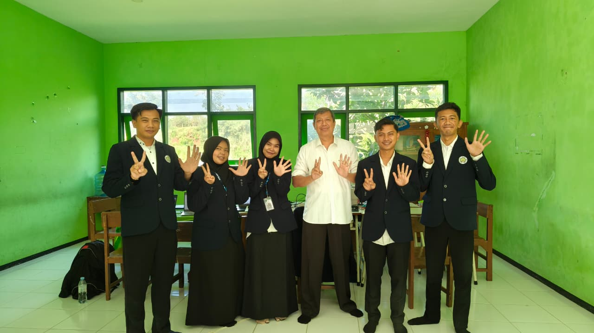
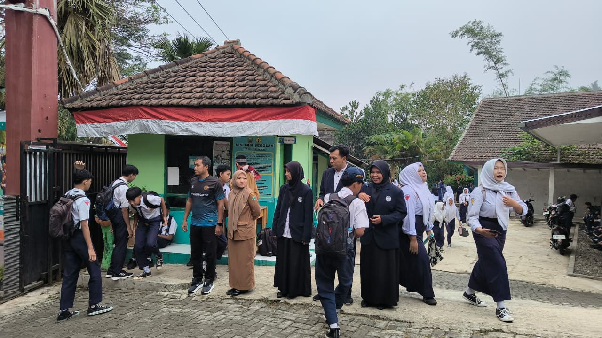
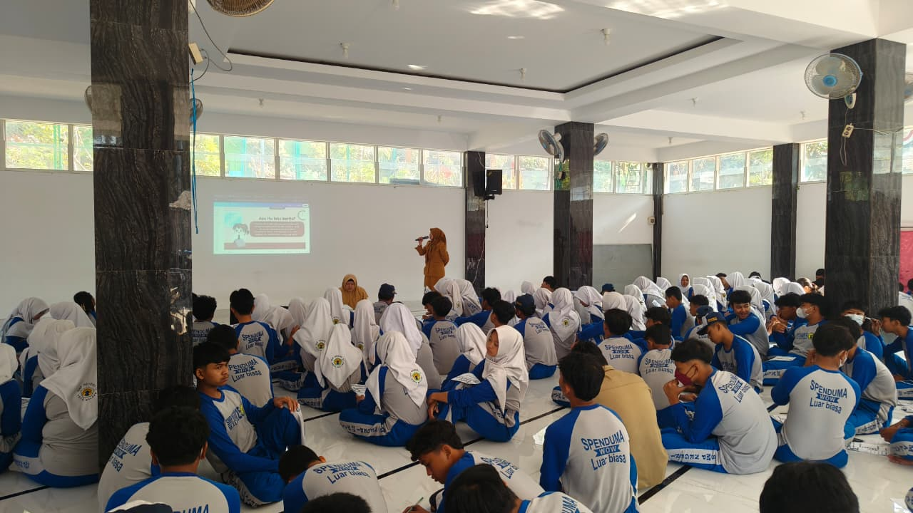

PPL Terbimbing
PPL Terbimbing
Menerapkan Pembelajaran dengan Pendampingan
Deskripsi Mata Kuliah
Praktik Pengalaman Lapangan (PPL) Terbimbing memberikan kesempatan kepada mahasiswa untuk menerapkan pengetahuan dan keterampilan pembelajaran melalui pengalaman langsung di sekolah mitra. Kegiatan ini mencakup orientasi, observasi, asistensi, dan praktik pembelajaran yang dilakukan dengan pendampingan guru pamong. Melalui kegiatan tersebut, mahasiswa mengembangkan kompetensi pedagogik dan profesional dengan menerapkan Pembelajaran Mendalam serta menghubungkan teori dari berbagai mata kuliah.
Pengalaman Awal
Melalui PPL Terbimbing, saya memperoleh pengalaman langsung dalam memahami dinamika kelas dan menerapkan teori yang telah dipelajari untuk menghadapi permasalahan pembelajaran.
Lokasi Penempatan
Informasi Lokasi Pelaksanaan PPL
SMP Negeri 25 Malang menjadi mitra pelaksanaan PPL Terbimbing.
SMPN 25 Malang menjadi salah satu lokasi pelaksanaan Praktik Pengalaman Lapangan (PPL) Terbimbing bagi mahasiswa PPG Prajabatan Universitas Negeri Malang. Sekolah ini menerima mahasiswa dari Program Studi Informatika dan IPS dengan jumlah masing-masing lima orang.
Selama kegiatan, mahasiswa terlibat langsung dalam berbagai aktivitas pembelajaran di lingkungan sekolah. Kegiatan tersebut memberikan kesempatan untuk memahami situasi pembelajaran secara nyata. Selain mengajar di kelas, mahasiswa juga dilatih menyusun perangkat pembelajaran dan melakukan evaluasi hasil belajar peserta didik.
Pelaksanaan PPL berlangsung selama enam minggu, mulai 30 April hingga 16 Mei 2025, dengan fokus pada penguatan kompetensi pedagogik, sosial, dan profesional mahasiswa. Interaksi dengan guru pamong, staf sekolah, dan rekan lintas bidang studi membantu mahasiswa mengembangkan kemampuan adaptasi dan kerja sama di lingkungan pendidikan. Melalui kegiatan ini, mahasiswa memperoleh bekal yang lebih matang sebagai calon pendidik profesional.
Artefak Pembelajaran
Rangkaian Artefak
Rangkaian artefak yang dihasilkan dari kegiatan Praktik Pengalaman Lapangan Terbimbing (PPL Terbimbing) sebagai bentuk proses, refleksi, dan pengembangan kompetensi mengajar.
Analisis Konteks Pembelajaran
Pembelajaran dirancang sesuai karakteristik peserta didik SMP yang mulai mampu berpikir kritis dan logis. Materi jurnalisme digital difokuskan pada kemampuan membedakan berita resmi dan informasi media sosial secara kritis. Model Problem Based Learning mendukung pembelajaran berbasis pengalaman nyata melalui diskusi dan analisis berita digital, sekaligus menerapkan teori Vygotsky melalui kegiatan kolaboratif dan pendampingan selama proses diskusi.
Analisis Tujuan Pembelajaran
Tujuan pembelajaran difokuskan pada kemampuan peserta didik dalam membedakan berita resmi dan informasi media sosial secara kritis. Pembelajaran menekankan kemampuan menganalisis, menyimpulkan, serta menyampaikan pendapat melalui diskusi aktif. Hasil refleksi menunjukkan tujuan pembelajaran telah mendukung perkembangan berpikir kritis dan literasi digital peserta didik.
Analisis Keunggulan Pembelajaran
Pembelajaran memiliki keunggulan pada penggunaan contoh nyata, media visual, dan diskusi yang membuat peserta didik lebih aktif dan fokus. Model Problem Based Learning mendukung kerja sama, komunikasi, serta keberanian menyampaikan pendapat. Kegiatan analisis berita juga membantu peserta didik memahami pentingnya kredibilitas informasi di ruang digital.
Analisis Keterbatasan & Refleksi Perbaikan
Pelaksanaan pembelajaran masih menghadapi kendala pada pengelolaan kelas, pemerataan partisipasi, dan fokus peserta didik saat diskusi. Instruksi LKPD juga perlu disederhanakan agar lebih mudah dipahami. Hasil refleksi menunjukkan perlunya pengelolaan waktu yang lebih efektif, variasi aktivitas, dan penguatan aturan kelas agar pembelajaran lebih kondusif dan terarah.
Analisis Konteks Pembelajaran
Pembelajaran siklus 1 membahas materi fakta dan opini dalam teks digital menggunakan model Problem Based Learning. Kegiatan dilakukan melalui analisis artikel, diskusi kelompok, dan pengerjaan LKPD berbasis identifikasi fakta serta opini. Aktivitas ini menunjukkan penerapan teori Piaget karena peserta didik mulai mampu berpikir logis dan menganalisis informasi sederhana. Proses diskusi dan kerja kelompok juga mencerminkan teori Vygotsky yang menekankan pentingnya interaksi sosial dalam pembelajaran.
Analisis Tujuan Pembelajaran
Tujuan pembelajaran berfokus pada kemampuan peserta didik dalam membedakan, mengklasifikasikan, dan mengevaluasi fakta serta opini dalam teks digital. Selama pembelajaran, sebagian besar peserta didik mampu membedakan fakta dan opini berdasarkan contoh yang diberikan. Beberapa peserta didik juga dapat memberikan alasan sederhana terhadap hasil klasifikasi pada LKPD. Hal tersebut menunjukkan bahwa pembelajaran telah mendukung kemampuan berpikir kritis dan literasi digital peserta didik.
Analisis Keunggulan Pembelajaran
Pembelajaran memiliki keunggulan pada penggunaan artikel digital, LKPD, dan media PPT yang membantu peserta didik memahami materi secara konkret. Diskusi kelompok meningkatkan kerja sama dan keberanian menyampaikan pendapat. Model Problem Based Learning juga membuat peserta didik lebih aktif dalam menganalisis informasi.
Analisis Keterbatasan & Refleksi Perbaikan
Pelaksanaan pembelajaran masih menghadapi kendala pada pengelolaan waktu dan keterlibatan peserta didik yang belum merata. Beberapa tahap, seperti refleksi dan pembahasan LKPD, belum berjalan maksimal karena keterbatasan waktu. Interaksi pembelajaran juga masih cenderung berpusat pada guru sehingga sebagian peserta didik terlihat pasif. Hasil refleksi menunjukkan perlunya apersepsi yang lebih terarah, metode yang lebih interaktif, dan pengelolaan kelas yang lebih efektif.
Analisis Konteks Pembelajaran
Pembelajaran siklus 2 membahas perlindungan identitas digital dari ancaman siber menggunakan model Problem Based Learning. Kegiatan dilakukan melalui studi kasus, diskusi kelompok, analisis ancaman siber, dan penyusunan panduan perlindungan data pribadi. Aktivitas ini menunjukkan penerapan teori Piaget karena peserta didik mulai mampu menganalisis hubungan antara teknologi dan risiko ancaman digital. Proses diskusi dan scaffolding juga mencerminkan teori Vygotsky yang menekankan pentingnya interaksi sosial dalam pembelajaran.
Analisis Tujuan Pembelajaran
Tujuan pembelajaran berfokus pada kemampuan peserta didik dalam mengidentifikasi ancaman siber, menganalisis risiko kebocoran data pribadi, dan menentukan langkah perlindungan identitas digital. Selama pembelajaran, peserta didik mulai mampu membedakan ancaman siber seperti phishing, scam, dan malware berdasarkan studi kasus yang diberikan. Hasil refleksi menunjukkan peserta didik lebih aktif berdiskusi dan berani menyampaikan pendapat. Hal tersebut menunjukkan bahwa pembelajaran telah mendukung kemampuan berpikir kritis, literasi digital, dan kesadaran terhadap keamanan data pribadi.
Analisis Keunggulan Pembelajaran
Pembelajaran memiliki keunggulan pada penggunaan media Scratch, Wordwall, dan studi kasus yang membuat materi lebih menarik dan mudah dipahami. Penyajian materi secara visual membantu peserta didik lebih fokus dan aktif selama pembelajaran. Diskusi dan analisis kasus juga meningkatkan kerja sama, komunikasi, dan keberanian menyampaikan pendapat. Model Problem Based Learning membuat peserta didik lebih terlibat dalam menemukan solusi secara mandiri.
Analisis Keterbatasan & Refleksi Perbaikan
Pelaksanaan pembelajaran masih menghadapi kendala pada pengelolaan kelas dan alur pembelajaran di laboratorium komputer. Beberapa peserta didik masih kurang fokus dan membuka halaman di luar kegiatan pembelajaran. Pengelolaan waktu diskusi dan presentasi juga belum optimal sehingga keterlibatan peserta didik belum merata. Hasil refleksi menunjukkan perlunya penguatan pengawasan kelas, alur pembelajaran yang lebih runtut, dan pembagian peran kelompok yang lebih jelas agar pembelajaran berjalan lebih efektif.
Analisis Konteks Pembelajaran
Pembelajaran Informatika pada materi keamanan data dan identitas digital menggunakan pendekatan Game Based Learning berbasis kartu kuartet. Kegiatan pembelajaran dilakukan melalui diskusi, presentasi, dan analisis kasus sederhana. Pendekatan ini sesuai dengan teori Piaget karena peserta didik mulai mampu berpikir logis dan menganalisis masalah secara kontekstual. Interaksi kelompok juga mencerminkan teori Vygotsky melalui pembelajaran kolaboratif dan scaffolding antarpeserta didik.
Analisis Tujuan Pembelajaran
Pembelajaran bertujuan melatih peserta didik menganalisis ancaman digital dan menentukan solusi menjaga keamanan data secara bertanggung jawab. Tujuan tersebut didukung melalui penggunaan media interaktif seperti kartu kuartet, Canva, dan situs analisis kata sandi. Peserta didik memperoleh pengalaman belajar melalui eksplorasi dan diskusi kelompok. Kegiatan refleksi di akhir pembelajaran membantu peserta didik memahami kembali konsep keamanan digital yang telah dipelajari.
Analisis Keunggulan Pembelajaran
Pelaksanaan pembelajaran menunjukkan partisipasi peserta didik yang lebih aktif dibandingkan siklus sebelumnya. Penggunaan media berbasis permainan membuat suasana belajar lebih menarik dan interaktif. Kondisi ini sesuai dengan teori Erikson pada tahap industry vs inferiority karena peserta didik diberi kesempatan menunjukkan kemampuan dan bekerja sama dalam kelompok. Pertanyaan pemantik dan refleksi pembelajaran juga membantu menghubungkan materi dengan pengalaman nyata peserta didik.
Analisis Keterbatasan & Refleksi Perbaikan
Pembelajaran masih menghadapi kendala pada pengelolaan kelas dan pemerataan partisipasi peserta didik. Sebagian peserta didik masih kurang percaya diri saat presentasi dan terdistraksi membuka laman di luar pembelajaran saat kegiatan laboratorium berlangsung. Hasil refleksi bersama guru pamong menunjukkan perlunya penguatan asesmen formatif, pengelolaan kelas digital yang lebih terstruktur, dan strategi diferensiasi pembelajaran agar proses pembelajaran lebih efektif dan melibatkan seluruh peserta didik secara optimal.
Refleksi Pembelajaran
Refleksi Pembelajaran
Dokumen refleksi pembelajaran dan pengembangan diri selama mengikuti mata kuliah ini.
Refleksi Pengalaman Belajar
Pelaksanaan PPL Terbimbing menjadi pengalaman berharga dalam memahami dinamika pembelajaran di kelas secara langsung. Saya belajar bahwa perencanaan yang matang dan pemahaman terhadap karakteristik peserta didik sangat menentukan keberhasilan proses belajar mengajar. Setiap siklus memberikan pelajaran tentang pentingnya adaptasi, pengelolaan kelas, dan pendekatan yang berpusat pada peserta didik.
Bimbingan dari guru pamong dan dosen pembimbing membantu saya mengidentifikasi kekuatan dan kelemahan dalam praktik mengajar. Umpan balik yang diberikan menjadi bahan refleksi untuk terus memperbaiki kualitas pembelajaran. Pengalaman ini memperkuat keyakinan bahwa menjadi pendidik adalah proses belajar sepanjang hayat yang membutuhkan komitmen, kesabaran, dan keterbukaan terhadap perbaikan.
Lampiran
Lampiran Pelaksanaan PPL Terbimbing
Dokumentasi pelaksanaan PPL Terbimbing sebagai gambaran pengalaman dan proses pembelajaran di sekolah.
Penugasan Siswa
Lembar penugasan siswa digunakan sebagai instrumen pembelajaran daring yang berisi tugas-tugas untuk mendukung aktivitas belajar mandiri selama proses pembelajaran berlangsung.
Lihat DokumenPenilaian Praktik
Lembar penilaian mencakup proses perancangan modul ajar dan pelaksanaan praktik mengajar sebagai instrumen untuk menilai kesesuaian perencanaan pembelajaran serta keterlaksanaan proses pembelajaran di kelas.
Lihat DokumenDokumentasi Kegiatan
Dokumentasi menjadi bagian yang melengkapi seluruh proses pembelajaran selama melaksanakan PPL Terbimbing. Foto yang ditampilkan merekam kegiatan perkuliahan dan praktik pembelajaran di sekolah. Dokumentasi juga memperlihatkan proses kolaborasi serta kegiatan refleksi yang dilakukan selama program berlangsung.
Dokumentasi Pembelajaran

Pembelajaran 1
Pembelajaran 2
Pembelajaran 3
Pembelajaran 4Dokumentasi Non-Pembelajaran

Pengantaran Mahasiswa
Observasi Sekolah
Observasi Mengajar
Kunjungan Dosen Pembimbing
Pembiasaan Salam Pagi
Pendampingan Kegiatan Kokulikuler